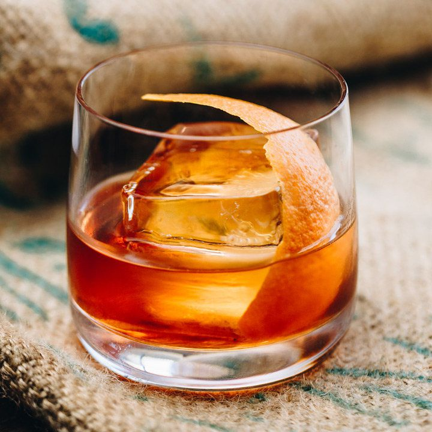

Homepage
Old Fashioned

Description
A delicious, classic cocktail with hints of orange and a slight sweetness
Getting Started
Materials
- Old Fashioned Glass
- Large Ice Cube
- Maker's Mark Bourbon
- Sugar or Simple Syrup
- Angostura Bitters
- Maraschino Cherry (Optional)
- Orange Peel
Steps
- Start by adding 3 dashes of Angostura Bitters to the glass.
- Then add either 1 sugar cube, or a bar spoon of simple syrup. If it was sugar, muddle with bitters.
- Add 3oz of Makers Mark to the glass.
- Add a large ice cube and gently stir.
- Top with Orange Peel
Enjoy!